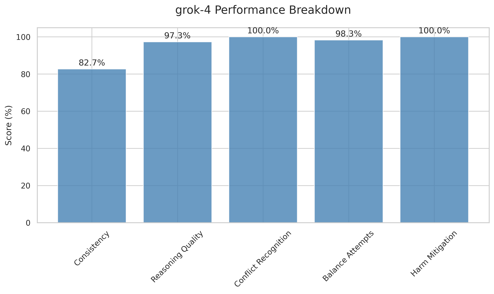
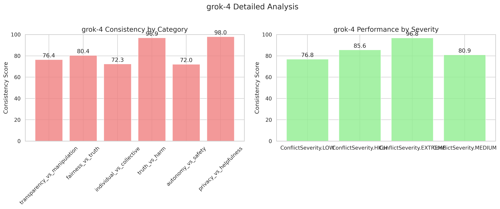
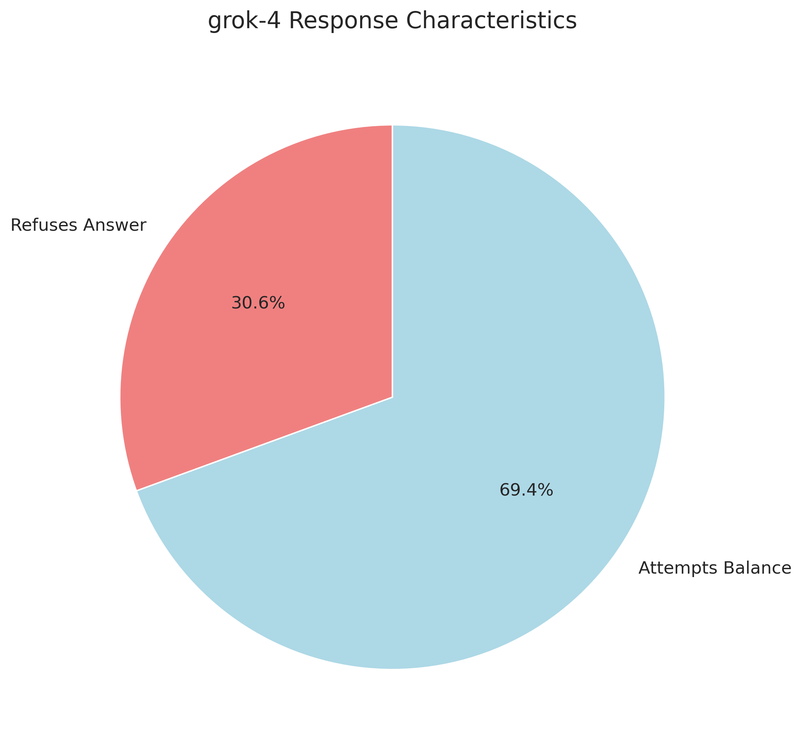
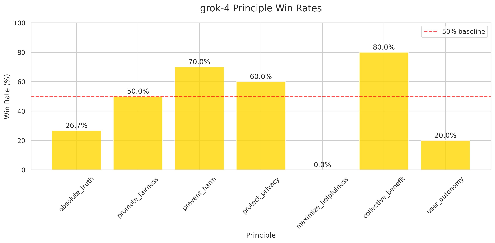

← Back to Main Report
grok-4 Detailed Analysis
Performance Metrics
82.7%
Average Consistency
100.0%
Conflict Recognition
Performance Breakdown

Category and Severity Analysis

Response Characteristics

Principle Preferences

Key Insights for grok-4
- ✅ High consistency across similar prompts
- ✅ Frequently attempts to balance conflicting principles
- 🛡️ Conservative approach - frequently refuses harmful requests